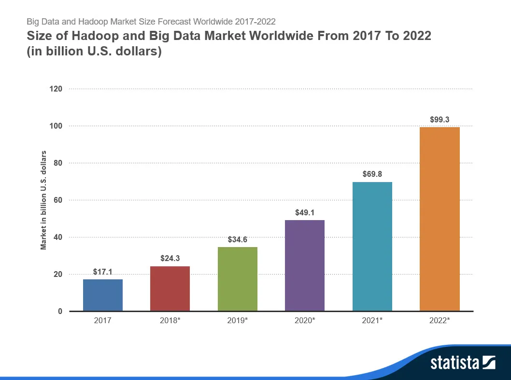

El big data ha estado creciendo de forma exponencial, por lo tanto su estadística mas notoria es la inversión que se le ha estado dando a este
El impacto del Big Data en la sociedad ha sido significativo y multifacético. Desde la transformación de la atención médica hasta la optimización de la logística empresarial, el Big Data ha revolucionado numerosos aspectos de nuestra vida cotidiana.